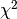

1.13. 特征选择
校验者: @yuezhao9210 @BWM-蜜蜂 @Loopy 翻译者: @v
在 sklearn.feature_selection 模块中的类可以用来对样本集进行 feature selection（特征选择）和 dimensionality reduction（降维），这将会提高估计器的准确度或者增强它们在高维数据集上的性能。
1.13.1. 移除低方差特征
VarianceThreshold 是特征选择的一个简单基本方法，它会移除所有那些方差不满足一些阈值的特征。默认情况下，它将会移除所有的零方差特征，即那些在所有的样本上的取值均不变的特征。
例如，假设我们有一个特征是布尔值的数据集，我们想要移除那些在整个数据集中特征值为0或者为1的比例超过80%的特征。布尔特征是伯努利（ Bernoulli ）随机变量，变量的方差为
![\mathrm{Var}[X] = p(1 - p)](img/468283fb7514d3373112cb7db7c43356.jpg)
因此，我们可以使用阈值 ``.8 * (1 - .8)``进行选择:
>>> from sklearn.feature_selection import VarianceThreshold
>>> X = [[0, 0, 1], [0, 1, 0], [1, 0, 0], [0, 1, 1], [0, 1, 0], [0, 1, 1]]
>>> sel = VarianceThreshold(threshold=(.8 * (1 - .8)))
>>> sel.fit_transform(X)
array([[0, 1],
[1, 0],
[0, 0],
[1, 1],
[1, 0],
[1, 1]])
正如预期一样， VarianceThreshold 移除了第一列，它的值为 0 的概率为  。
。
1.13.2. 单变量特征选择
单变量的特征选择是通过基于单变量的统计测试来选择最好的特征。它可以当做是评估器的预处理步骤。Scikit-learn 将特征选择的内容作为实现了 transform 方法的对象：
SelectKBest移除那些除了评分最高的 K 个特征之外的所有特征SelectPercentile移除除了用户指定的最高得分百分比之外的所有特征- 对每个特征应用常见的单变量统计测试: 假阳性率（false positive rate）
SelectFpr, 伪发现率（false discovery rate）SelectFdr, 或者族系误差（family wise error）SelectFwe。 GenericUnivariateSelect允许使用可配置方法来进行单变量特征选择。它允许超参数搜索评估器来选择最好的单变量特征。
例如下面的实例，我们可以使用  检验样本集来选择最好的两个特征：
>>> from sklearn.datasets import load_iris
>>> from sklearn.feature_selection import SelectKBest
>>> from sklearn.feature_selection import chi2
>>> iris = load_iris()
>>> X, y = iris.data, iris.target
>>> X.shape
(150, 4)
>>> X_new = SelectKBest(chi2, k=2).fit_transform(X, y)
>>> X_new.shape
(150, 2)
这些对象将得分函数作为输入，返回单变量的得分和 p 值 （或者仅仅是 SelectKBest 和 SelectPercentile 的分数）:
- 对于回归:
f_regression,mutual_info_regression - 对于分类:
chi2,f_classif,mutual_info_classif
这些基于 F-test 的方法计算两个随机变量之间的线性相关程度。另一方面，mutual information methods（互信息）能够计算任何种类的统计相关性，但是作为非参数的方法，互信息需要更多的样本来进行准确的估计。
稀疏数据的特征选择
如果你使用的是稀疏的数据 (例如数据可以由稀疏矩阵来表示),
chi2,mutual_info_regression,mutual_info_classif可以处理数据并保持它的稀疏性。警告
不要使用一个回归评分函数来处理分类问题，你会得到无用的结果。
示例：
1.13.3. 递归式特征消除
给定一个外部的估计器，可以对特征赋予一定的权重（比如，线性模型的相关系数），recursive feature elimination ( RFE ) 通过考虑越来越小的特征集合来递归的选择特征。 首先，评估器在初始的特征集合上面训练并且每一个特征的重要程度是通过一个 coef_ 属性 或者 feature_importances_ 属性来获得。 然后，从当前的特征集合中移除最不重要的特征。在特征集合上不断的重复递归这个步骤，直到最终达到所需要的特征数量为止。 RFECV 在一个交叉验证的循环中执行 RFE 来找到最优的特征数量
示例:
- Recursive feature elimination : 通过递归式特征消除来体现数字分类任务中像素重要性的例子。
- Recursive feature elimination with cross-validation : 通过递归式特征消除来自动调整交叉验证中选择的特征数。
1.13.4. 使用 SelectFromModel 选取特征
SelectFromModel 是一个 meta-transformer（元转换器） ，它可以用来处理任何带有 coef_ 或者 feature_importances_ 属性的训练之后的评估器。 如果相关的coef_ 或者 featureimportances 属性值低于预先设置的阈值，这些特征将会被认为不重要并且移除掉。除了指定数值上的阈值之外，还可以通过给定字符串参数来使用内置的启发式方法找到一个合适的阈值。可以使用的启发式方法有 mean 、 median 以及使用浮点数乘以这些（例如，0.1*mean ）。
有关如何使用的例子，可以参阅下面的例子。
示例:
- Feature selection using SelectFromModel and LassoCV: 从 Boston 数据中自动选择最重要两个特征而不需要提前得知这一信息。
1.13.4.1. 基于 L1 的特征选取
Linear models 使用 L1 正则化的线性模型会得到稀疏解：他们的许多系数为 0。 当目标是降低使用另一个分类器的数据集的维度， 它们可以与 feature_selection.SelectFromModel 一起使用来选择非零系数。特别的，可以用于此目的的稀疏评估器有用于回归的 linear_model.Lasso , 以及用于分类的 linear_model.LogisticRegression 和 svm.LinearSVC
>>> from sklearn.svm import LinearSVC
>>> from sklearn.datasets import load_iris
>>> from sklearn.feature_selection import SelectFromModel
>>> iris = load_iris()
>>> X, y = iris.data, iris.target
>>> X.shape
(150, 4)
>>> lsvc = LinearSVC(C=0.01, penalty="l1", dual=False).fit(X, y)
>>> model = SelectFromModel(lsvc, prefit=True)
>>> X_new = model.transform(X)
>>> X_new.shape
(150, 3)
在 SVM 和逻辑回归中，参数 C 是用来控制稀疏性的：小的 C 会导致少的特征被选择。使用 Lasso，alpha 的值越大，越少的特征会被选择。
示例:
- Classification of text documents using sparse features: 不同算法的比较，当使用 L1 正则化的特征选择在文件分类任务上。
L1-recovery 和 compressive sensing（压缩感知）
当选择了正确的 alpha 值以后， Lasso 可以仅通过少量观察点便恢复完整的非零特征， 假设特定的条件可以被满足的话。特别的，数据量需要 “足够大” ，不然 L1 模型的表现将缺乏保障。 “足够大” 的定义取决于非零系数的个数、特征数量的对数值、噪音的数量、非零系数的最小绝对值、 以及设计矩阵（design maxtrix） X 的结构。特征矩阵必须有特定的性质，如数据不能过度相关。
关于如何选择 alpha 值没有固定的规则。alpha 值可以通过交叉验证来确定（
LassoCV或者LassoLarsCV），尽管这可能会导致欠惩罚的模型：包括少量的无关变量对于预测值来说并非致命的。相反的， BIC（LassoLarsIC）倾向于给定高 alpha 值。Reference（参考文献） Richard G. Baraniuk “Compressive Sensing”, IEEE Signal Processing Magazine [120] July 2007 http://dsp.rice.edu/sites/dsp.rice.edu/files/cs/baraniukCSlecture07.pdf
1.13.4.2. 基于 Tree（树）的特征选取
基于树的 estimators （查阅 sklearn.tree 模块和树的森林 在 sklearn.ensemble 模块） 可以用来计算特征的重要性，然后可以消除不相关的特征（当与 sklearn.feature_selection.SelectFromModel 等元转换器一同使用时）:
>>> from sklearn.ensemble import ExtraTreesClassifier
>>> from sklearn.datasets import load_iris
>>> from sklearn.feature_selection import SelectFromModel
>>> iris = load_iris()
>>> X, y = iris.data, iris.target
>>> X.shape
(150, 4)
>>> clf = ExtraTreesClassifier()
>>> clf = clf.fit(X, y)
>>> clf.feature_importances_
array([ 0.04..., 0.05..., 0.4..., 0.4...])
>>> model = SelectFromModel(clf, prefit=True)
>>> X_new = model.transform(X)
>>> X_new.shape
(150, 2)
示例:
- Feature importances with forests of trees: 在合成数据上恢复有用特征的示例。
- Pixel importances with a parallel forest of trees: 在人脸识别数据上的示例。
1.13.5. 特征选取作为 pipeline（管道）的一部分
特征选择通常在实际的学习之前用来做预处理。在 scikit-learn 中推荐的方式是使用 :sklearn.pipeline.Pipeline:
clf = Pipeline([
('feature_selection', SelectFromModel(LinearSVC(penalty="l1"))),
('classification', RandomForestClassifier())
])
clf.fit(X, y)
在这段代码中，我们利用 sklearn.svm.LinearSVC 和 sklearn.feature_selection.SelectFromModel 来评估特征的重要性并且选择出相关的特征。 然后，在转化后的输出中使用一个 sklearn.ensemble.RandomForestClassifier 分类器，比如只使用相关的特征。你也可以使用其他特征选择的方法和可以提供评估特征重要性的分类器来执行相似的操作。 请查阅 sklearn.pipeline.Pipeline 来了解更多的实例。